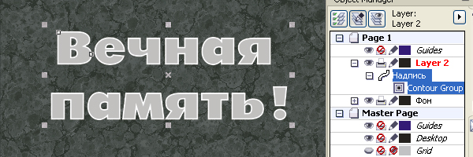
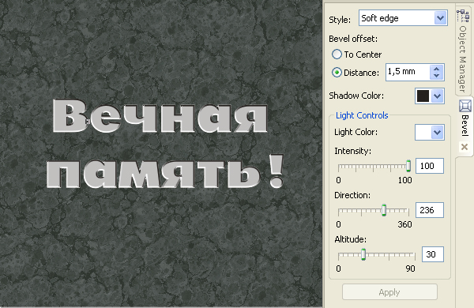
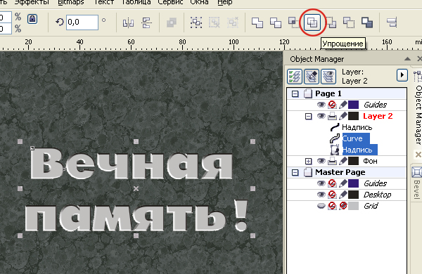
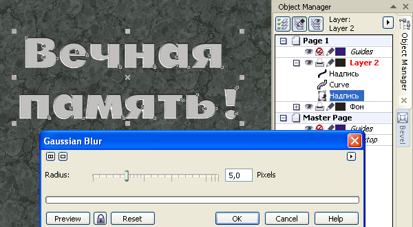
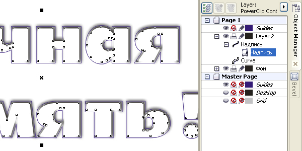
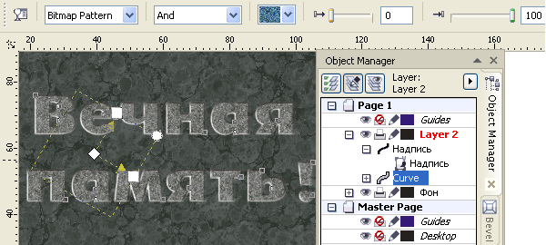
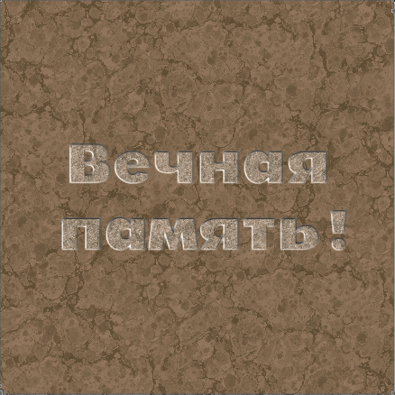
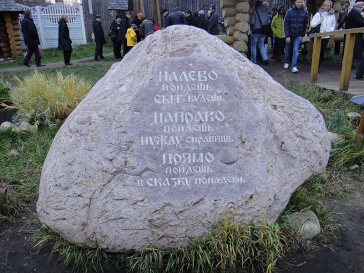

Надписи на каменных плитах
Будем исходить из того, что нужную текстуру камня Вы выбрали сами. Я же для примера воспользовался одной из текстур в наборах Плиток (Tiles).
Итак, поместив нужную надпись поверх текстуры камня, переведём её в вектор и создадим внутренний контур с шагом примерно 1/20 размера буквы.

Разъедините контурную группу. К исходному объекту (надписи) применим эффект Фаска (Bevel).
Параметры фаски: размер — не критично, но больше чем шаг контурной группы; цвет тени — чёрный; цвет света — белый; интенсивность света — 100%; направление от источника света — примерно 235 град.; высота источника света — примерно 30 град.

Разъедините Фаску с исходным объектом. Исходный объект сделайте без заливки и без абриса, и переместите его на самый верхний уровень (в дальнейшем он понадобится для создания Контейнера).
Выделите полученную фаску (растровый объект) и объект, полученный созданием внутренней контурной группы и выполните команду Упростить.

Затем к полученному объекту примените небольшое размытие (в моём случае величина размытия — 5 пикс.)

Полученный объект поместите в контейнер, для которого мы оставили исходный объект.

Теперь объекту, который был получен как внутренний контур, надо придать текстуру зернистости, для чего применим к нему Прозрачность. Тип прозрачности — Растровый рисунок (Bitmap Pattern), режим смешивания слоёв — And, степень прозрачности 0.

При необходимости, для получения лучшего результата, можно попробовать добавить прозрачность к объекту, полученному эффектом Фаска (тому, что в Контейнере).
И последнее: поместив над объектом с текстурой камня другой объект, такой же конфигурации, но векторный и с прозрачностью, можно легко и быстро, изменяя цвет этого добавленного объекта изменять цвет и оттенок камня.

Специально для CDRPRO.RU.
Копирование урока или части его и публикация любым способом без письменного согласия автора запрещено.
Мрачновато)))))
На камне же не только это пишут.

sergey, если мрамновато, значит цель достигнута. Инга просила трагический вид. А в твоём примере мне видится нвая тема урока: "Как отполировать камень".
Solowejka! Вам можно открывать бизнес по оформлению надгробий :):) (шучу конечно). Отлично получилось!!
Инга, в любом случае оценила,
а следующие посетители, которые не в теме?
Они-то не смогут связать это с просьбой Инги.
Кстати, урок можно использовать не только для визуализации надписи на граните, но и на стекле, метале и т.д.
Это всего-лишь моё мнение.